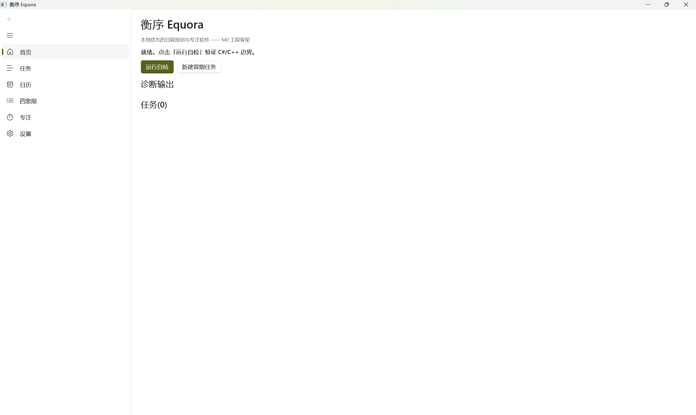
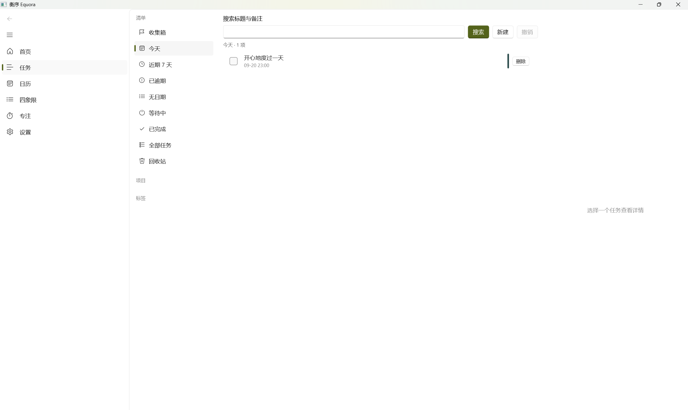
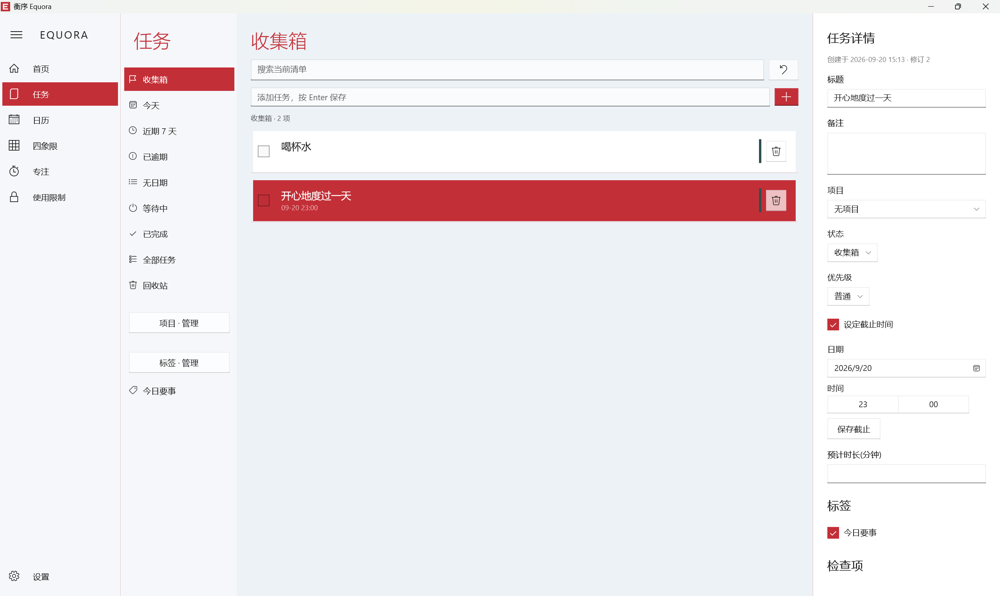

Equora 衡序 — 发布说明
v1.0.2（2026-09-23）— 日历与使用限制更新
ICS 导入的日程现可右键编辑和删除，重复日程提供整组操作。受限进程显示与扩展一致的封锁页（覆盖工作区、保留标题栏、持续覆盖不随焦点消失、红色关闭与白色临时允许按钮）及每个应用一次的 5 分钟临时允许；分心提醒出现在应用窗口顶部；有每日额度的网站与进程在窗口右上角持续显示剩余时间，不依赖前台焦点，10 分钟内按秒倒计时。详见 v1.0.2 更新说明。
v1.0.1（2026-09-23）— 正式版修复
修复中文等非 ASCII 路径下 ICS 导入失败（cannot read ics file）的问题；同类修复覆盖 ICS 导出、任务 JSON/CSV 导入导出、备份与日志及数据库路径。详见 v1.0.1 更新说明。
v1.0.0（2026-09-23）— 正式版
学期批量添加支持选择是否创建任务；时间段支持独立标题与右键批量编辑/删除，可同时处理关联任务。新增学期结束自动归档、以往学期查看，以及三次确认的本机数据重置。官网和帮助中心同步更新。详见 v1.0.0 正式版说明。
v0.2.2 — 学期模式
新增学期名与起止日期设置、学期周次显示、按每周或指定周次批量添加独立任务和时间段。关闭模式需要二次确认，已添加内容保持不变。详见 v0.2.2 更新说明。
v0.2.1 — 扩展修复与限制提示
修复网站临时允许的地址误判，补齐扩展面板与网页倒计时；新增全局暂停限制的黄色倒计时提示、回收站永久删除和删除二次确认。详见 v0.2.1 更新说明。
v0.2.0(2026-09-20)界面焕新与使用限制(预发布)
v0.2.0 是衡序迄今规模最大的一次更新。桌面应用的外观与交互按正式产品的标准全面重塑——品牌化导航外壳、工作概览首页、任务三栏工作台与全新主题系统,取代了 v0.1.x 的模板化界面;同时引入全新的「使用限制」模块,将专注管理从应用内延伸到应用程序与网站。安装形式同步升级,新增无需管理员权限的 EXE 安装包。
全新外观


工作概览:v0.1.x(左)与 v0.2.0(右)


任务页:v0.1.x(左)与 v0.2.0(右)
- 品牌化导航外壳:「EQUORA」字标与紧凑图标栏取代默认导航模板;展开时内联推入而非遮挡当前页面,窄窗口自动折叠为图标栏。
- 工作概览首页:v0.1.x 的工程自检页(运行自检/诊断输出)正式退役,代之以今日概览、待处理任务与「管理任务 / 查看日历 / 开始专注」快捷入口。
- 任务三栏工作台:智能清单、任务列表与详情面板同屏;详情面板整合备注、项目、状态、优先级、截止时间、预计时长、标签与检查项。
- 全新主题系统:浅色/深色/跟随系统;预设强调色与任意
#RRGGBB自定义;高对比度跟随操作系统;外观偏好持久化于 preferences.json,解包构建同样生效。 - 交互细节一致性:新建任务使用独立草稿字段;完成、删除、恢复与撤销保持选中与详情状态;搜索防抖;
Ctrl+Z撤销任务变更。
全新模块:使用限制
将「专注时该做什么」延伸为「专注时不做什么」。在新的「使用限制」页为应用程序与网站域名建立规则,设置一个或多个条件,任一满足即限制:
- 应用程序:读取已安装应用或手动填写进程名;命中规则时窗口最小化,不结束进程、不丢失未保存内容;后台运行不计时。
- 网站(Edge/Chrome):MV3 扩展与本地消息组件;域名规则含子域名;按前台活动标签计时,不读取网页正文、不保存 URL 路径。
- 三类条件:正在专注时禁止;每天指定时间段(支持跨午夜);每日可用分钟数(按本地日期重置,空闲 60 秒暂停统计)。
- 安全出口:对单个域名临时允许 5 分钟;一键暂停所有限制 15 分钟;Windows 设置、任务管理器、文件管理器与衡序自身等关键进程永不被限制;桌面端退出或心跳超时自动解除。
详见 使用限制指南。
功能增强
- 任务分类:项目与标签的创建、重命名、配色与删除;删除分类保留任务;详情面板直接分配。
- 专注暂停与继续:暂停冻结计时,切换页面保持;恢复后续算有效专注时间;新增工作/休息轮次等会话模式。
- 托盘常驻与单实例:关闭窗口最小化到托盘,专注进行中不中断;再次启动唤起既有实例;可恢复为常规退出。
- 日历:时间块支持备注、颜色与时间编辑;删除时间块保留其中的任务。
- 数据目录迁移:设置内迁移数据目录,快照式迁移与非覆盖保护。
安装格式
| 格式 | 适用 | 说明 |
|---|---|---|
Equora-vX.Y.Z-win-x64-Setup.exe |
推荐 | 双击安装,用户级安装目录,免管理员、免证书信任,自带全部运行时 |
Equora-vX.Y.Z-win-x64.msix |
侧载环境 | 需先信任同目录 .cer(Cert:\LocalMachine\TrustedPeople) |
Equora-vX.Y.Z-BrowserExtension.zip |
网站限制 | 开发者模式加载,按应用内指引连接 |
两种桌面安装包均为自包含(无需 .NET 运行时),发布资产提供 SHA256SUMS.txt 校验。
测试覆盖
| 测试套件 | 数量 | 状态 |
|---|---|---|
| 原生核心(GoogleTest) | 137 | 全部通过 |
| 桌面应用(xUnit) | 127 | 全部通过 |
| 同步服务器(GoogleTest) | 20 | 全部通过 |
| 浏览器扩展与本地消息组件 | 3 | 全部通过 |
| 合计 | 287 | 全部通过 |
Release 产物在本机完成冒烟:解包 EXE 与安装后的 MSIX 均正常启动。
已知限制
- 安装包为自签名证书(CN=Equora),SmartScreen 可能提示;EXE 安装路径无需证书信任。
- 应用限制属自主使用管理:命中即最小化窗口,并非系统级防绕过锁定;后台音频与管理员程序不保证被阻止。
- 浏览器扩展未上架商店,需以开发者模式加载;网站限制要求桌面端保持运行。
- 同步服务器当前仅提供 HTTP,建议在本机或 Tailscale 等可信网络内使用。
从 v0.1.1 升级
- MSIX 直接覆盖安装;EXE 与 MSIX 为并行安装形态,可按需只保留其一。
- 数据库与偏好自动沿用,无需手动迁移。
v0.1.1(2026-09-19)启动修复
- 修复启动即崩:MainWindow 导航图标
Icon="Bullets"/Icon="Timer"引用了 WinUI 3Symbol枚举不存在的成员名,XAML 运行期抛异常导致无窗口即退;改为FontIcon直接指定 Segoe Fluent 字形。该缺陷随 v0.1.0 发布,特此致歉。 - 安装格式调整:自本版起以 MSIX 作为安装格式(自签名证书 CN=Equora,首次安装需将证书导入
Cert:\LocalMachine\TrustedPeople),已在本机实测安装与启动。 - v0.1.0 的发行资产已从 Release 页移除并加警示说明,请统一使用 v0.1.1 或更高版本。
v0.1.0(2026-09-19)首个发布候选
核心能力
| 功能 | 状态 |
|---|---|
| 任务管理(三栏/智能清单/搜索/撤销) | 完整 |
| 日历(周视图/拖拽/冲突/重复/ICS) | 完整 |
| 四象限(拖拽/今日三要事/容量) | 完整 |
| 快速收集(自然语言解析/预览) | 完整 |
| 专注会话(5 种模式/分心捕获/崩溃恢复) | 完整 |
| 网站限制(MV3 扩展/白名单/临时允许) | 完整 |
| 智能规划(排程/拆分/估时校正) | 核心就绪 |
| 每日/每周复盘 | 完整 |
| 自动化规则 | 核心(界面待完善) |
| 多设备同步(服务器/协议/客户端) | 核心就绪 |
| 安全白名单/紧急解锁/审计 | 完整 |
测试覆盖
| 测试套件 | 数量 | 状态 |
|---|---|---|
| 原生核心(GoogleTest) | 137 | 全部通过 |
| 桌面应用(xUnit) | 105 | 全部通过 |
| 同步服务器(GoogleTest) | 20 | 全部通过 |
| 合计 | 262 | 全部通过 |
架构
WinUI 3(C#) ←C ABI v2→ C++20 核心 ←SQLite(WAL)→ 本地文件
↕ HTTPS(JSON)
Drogon + PostgreSQL(可选)
- 原生零警告编译(/W4)
- 6 个版本化数据库迁移(升级保留数据,失败回滚)
- 一致性备份(SHA-256 校验 + 恢复预演)
- 崩溃恢复(专注会话以最后活动时刻收尾)
性能基准(本机 SSD,Release 构建)
| 操作 | 耗时 | 目标 |
|---|---|---|
| 任务创建(1000 条) | P95 < 100ms | 达标 |
| 智能清单查询(1000 条) | < 50ms | 达标 |
| 全量列表(1000 条) | < 100ms | 达标 |
| 周窗口物化(500 块) | < 500ms | 达标 |
| 一致性备份(200 条) | < 2s | 达标 |
隐私
- 前台应用监测默认关闭;开启后仅读进程名(xxx.exe),不读窗口内容。
- 网络同步默认关闭;关闭状态零网络请求。
- 详见 privacy-and-security.md。
已知限制(历史记录,以当时版本为准)
| 项目 | 说明 |
|---|---|
| Windows Service 严格限制 | 基础就绪,Service 进程未构建 |
| Widgets / 通知操作按钮 | 需真机验证 |
| HTTPS 终端 | 同步服务器当前仅 HTTP(本机/Tailscale) |
| 自动排程 UI 预览 | 后端 API 完整,界面待打磨 |
| CalDAV / Outlook | 未实现 |
构建运行(源码)
# 构建原生
cd native && cmake --preset win-x64-release && cmake --build --preset win-x64-release
# 构建桌面
cd ../desktop && dotnet build Equora.slnx -c Release
# 运行(自动拷贝 DLL)
dotnet run --project Equora.App -c Release
同步服务器(Docker Compose)
docker compose -f docker/docker-compose.yml up --build
# 服务器: http://127.0.0.1:8787
# 令牌: dev-local-token(可自定义)
升级与卸载
- 数据库迁移自动执行(打开时检测版本并升级);建议升级前在设置页「立即备份」。
- 卸载:删除安装目录与
%LOCALAPPDATA%\Equora\(用户数据)。
许可
本项目采用 MIT License。
致谢
感谢所有第三方开源组件的贡献者 —— 完整清单。